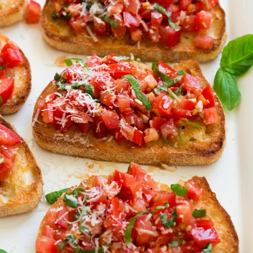

Bruschetta Recipe
Classic Italian dish. I like!.
Ingredients
- 1 baguette, cut into 1/4 inch slices
- extra-virgin olive oil
- Balsamic vinegar
- 1 clove of garlic
- Roma tomatoes
- Kosher salt
- Freshly-ground black pepper
Recipe
- Toast Bread 10 minutes at 400 degrees in oven.
- Mince ingredient: tomatoes, garlic, basil and parmesan.
- Mix together: Toss with olive oil and vinegar and spoon onto bread.
